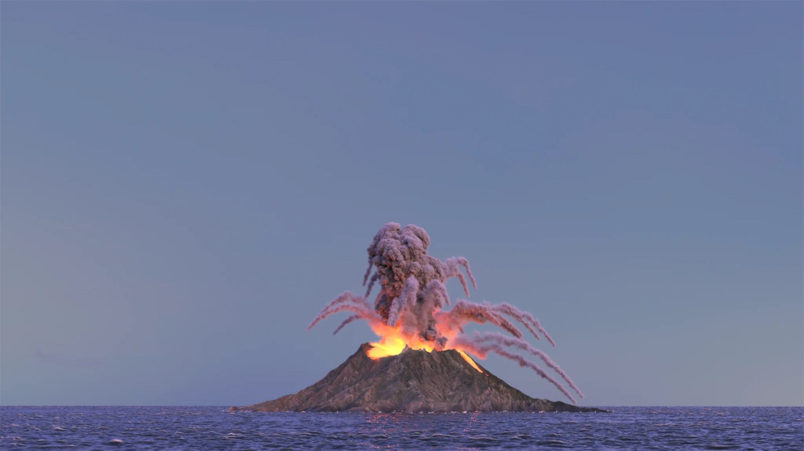
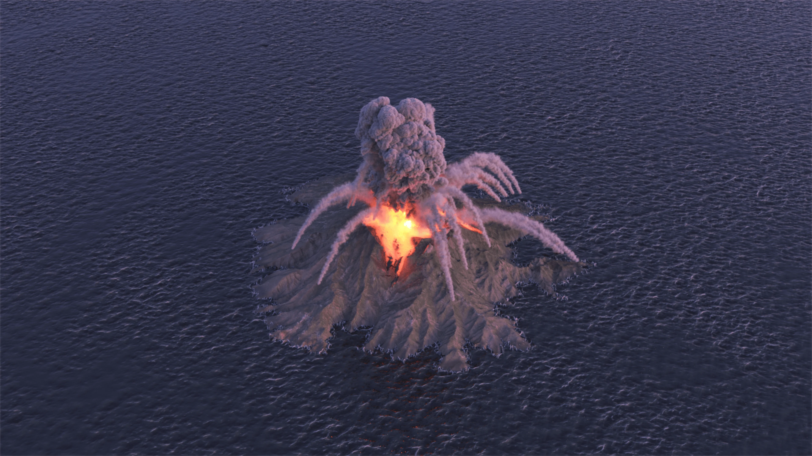
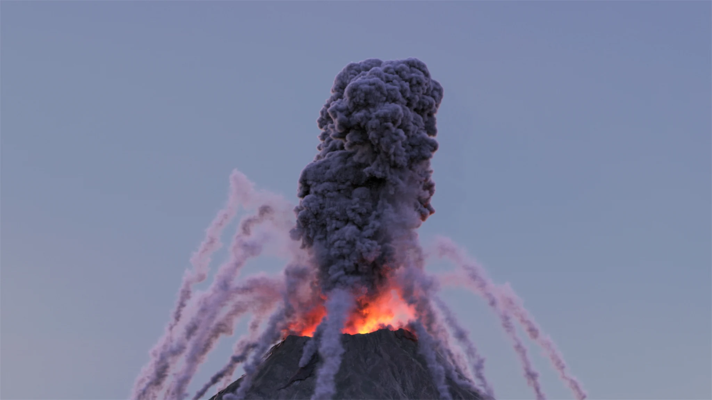
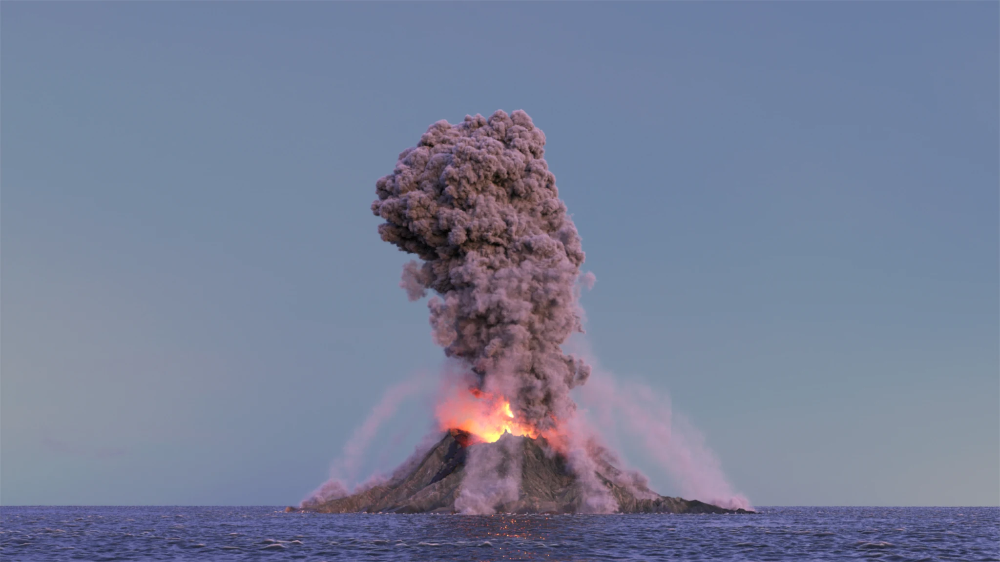
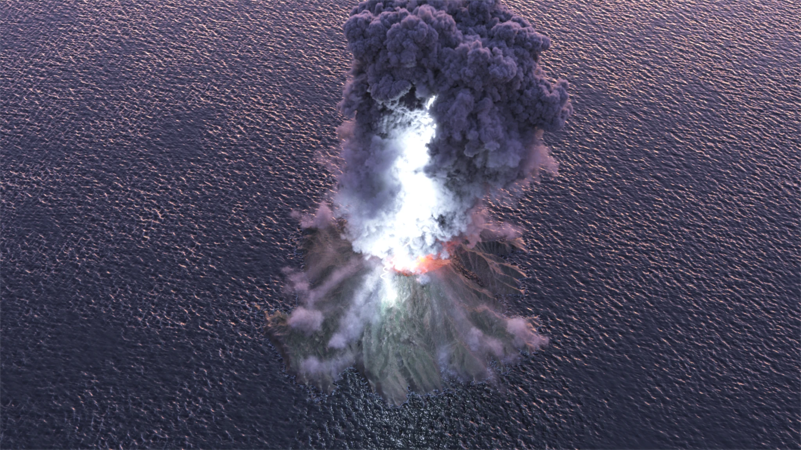
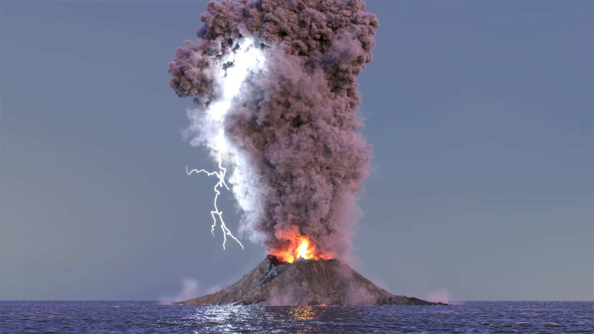
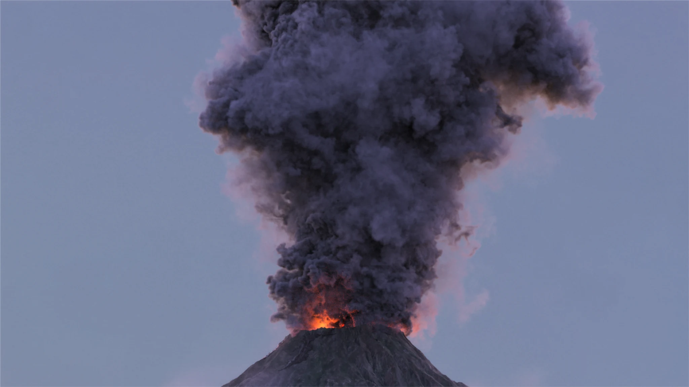

Procedural volcanic eruption sequence simulated and rendered in Houdini. Lava flows were solved using FLIP fluid dynamics with localized divergence attributes and emissive color-mapped shaders. Atmospheric plume and ash effects were achieved with sparse Pyro dynamics modulated by custom VEX controllers driving combustion and temperature dissipation. Volcanic lightning arcs were synthesized with a custom procedural branching tool built in VEX.
Production Renders






